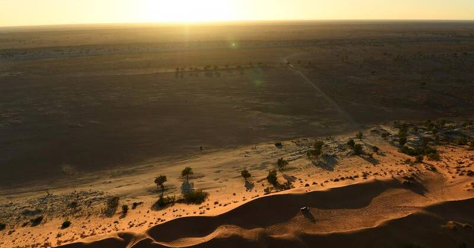

Top End (NT local)
Simpson Desert conservation deal marks national milestone

Simpson Desert conservation deal marks national milestone
A huge swath of the Simpson Desert in the Northern Territory's south-east is now protected through Aboriginal management under a new Indigenous Protected Area covering 47,311 square kilometres. The signing at the remote Uluperte homelands helps Australia reach its target of protecting a quarter of the nation's landmass. The Central Land Council says federal support will fund an IPA co-ordinator and new ranger positions.
Source: Katherine Times